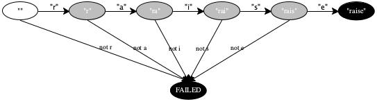
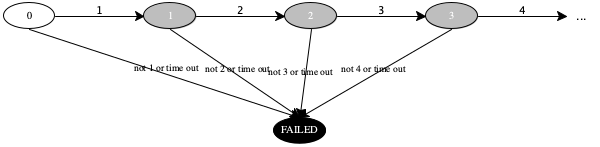

Prologue
The book relies on two programming techniques. First, it explains many ideas in programming languages with state machines and their implementations. Second, a programming language and its pieces consist of data drawn from complicated data types, that is, types of data whose definitions are self-referential and mutually referential. This prologue presents this basic background.
Abstract Machines
A traffic light can be in about three major states: red, yellow, and green (plus blinking yellow or red plus turned off). It transitions from red to green, from green to yellow, and from yellow to read. These transitions are triggered by the passage of time.
A soda machine also comes with two states. In the first state it is ready
to accept your selection. When you select a “classic foobar,” it
transitions to the second state—
Every state machine comes with states—
the set of states a machine can be in;
the state(s) in which a machine starts—
called initial state(s); the state(s) in which a machine shuts down—
called final state(s); and transitions that take a machine from one state to another.
By showing red, a traffic light causes traffic to stop and thus prevents potential accidents. It is therefore called a fail-safe state. When machines misfunction they also tend to be engineered to go into a fail-safe state. The soda machine, for example, goes into a “waiting for your selection” state when turned on. A well-designed traffic light will go into a “red” state.

A “lexer” is the piece of a language parser that recognizes and differentiates individual words. Remember that in this book we leave this task to your JSON library.
states "" (no letter seen), "r" (just “r”), "ra", "rai", "rais", "raise" and FAILED;
the only initial state is "";
the two final states are "raise" (signaling success) and FAILED (signaling failure).; and
transitions when the letter "r" shows up and the machine is in state "", it transitions to "r"; for any other letter, it moves to FAILED.
Stop! Figure out the remaining transitions.
In addition to the above, people also use two other means to specify state machines: diagrams and tables.
Figure 3 shows how to turn this natural-language description into a diagram with a relatively obvious interpretation. The white node is an initial state, the black ones are final states, and the gray ones are intermediate states. The labels on the arrows specify when the lexer transitions from one state to another. Although every intermediate state connects to two successor states, the machine is deterministic because the transition labels are mutually exclusive.
Here is a table representation of the same finite machine:
current state
transition
next state
""
r
"r"
"r"
a
"ra"
"ra"
i
"rai"
"rai"
s
"rais"
"rais"
e
"raise"

states all natural numbers;
0 is the initial state;
FAILED is a final state; and
transitions when the machine is in state n and its “input” within a certain time interval is n + 1, it transitions to state n + 1; otherwise it goes to a FAILED state.
current state
transition
next state
0
1
1
1
2
2
2
3
3
3
4
4
...
...
...
current state
transition
next state
n
n + 1
n + 1
for all n ∈ N
n
k
FAILED
for k ≠ n + 1
Implementing Abstract Machines
From a high-level perspective, a state machine is a relatively simple program. It consumes some input, creates an initial state from this input, computes a next state until it reaches a final one, and then produces some output from this last state of the machine. Historically, the first steps is dubbed loading, the intermediate step transitioning, and the last one unloading.
// the `main` method Output driver(Input in) { State initial_state = load(in); State current = initial_state; while !(final_state_huh(current)) { current = transition(current); } Output out = unload(current); return out; } // turning input `in` into an initial state State load(Input in) { ... return initial_state; } // computing the next state given the `current` one State transition(State current) { State next; ... return next; } // is this state `s` a final state? Boolean final_state_huh(State s) { Boolean what_is_it; ... return what_is_it; } // turning a final state into some output Output unload(State s) { Output out; ... return out; }
Figure 5 displays the complete program, using pseudo-code similar to what readers should know from a first or second course on Programming. The program’s entry point is the driver method, which refers to four helper methods: load for turning the given input into an initial state; transition for creating the next state from the current state; final_state_huh for recognizing whether a state belongs to the set of final ones; and unload for creating some output from the final machine state.
If a state machine reacts to notions other than its current state, the driver method must consume this input and hand it to transition so that this method can compute the next state from the current one and the input.
If a state machine generates output for (some of) its transitions, the transition method should return two result values: the next state and the output. The driver method can then display the output as appropriate.
By isolating the processing of external stimuli and output in the driver method, the remaining functions and remain easy to test in isolation. And this point brings us to the topic of programming in general.
Implementing Abstract State Machines in the notes explain how to solve these exercises.
Exercise 1. Implement the finite state machine from this section in your favorite programming language.
Exercise 2. Implement the infinite state machine from this section.
Text versus Data
The driver of our abstract machines consumes an input, which load turns into an initial machine state. When the machine stops in a final state, unload renders this state as an output.
Now you may wonder what these inputs and outputs are. In this book, the input is a data representation of a program; the output is the data representation of the program’s result. But, you mat wonder, programs are just text, sequences of keyboard characters that you enter into an IDE or text editor. And results are obviously just numbers, strings, and such “things.”
While this view of programming may work for simple application domains, the domain of abstract machines for programming languages demands a nuanced view of programming. It demands a systematic design approach. This section walks you through the rudimentary ideas. If you are intrigued, consider studying our book How to Design Programs.
1 + 2 |
(+ 1 2) |
So, we have to settle on how to write this kind of expression in a standard way. This book uses JSON notation for the programming languages we wish to create and study via abstract machines.
JSON is a simple data notation that permits people to write down four different kind of values: numbers, strings (character sequences enclosed in quotes), arrays of JSON values, and objects (which combine strings with JSON values via ":"). Most of the time, we use only the first three.
[1, "+", 2] |
(list 1 "+" 2)
JsonArray ja = new JsonArray(); |
ja.add(new Integer(1)); |
ja.add("+"); |
ja.add(new Integer(2)); |
The key is, though, that text in a file is not data in your programming languages. Libraries read this text and create data in your programming language. Indeed, the same libraries often also provide the functionality for converting data into text again.
But, it is dealing with data that makes for systematic program design.
Systematic Program Design: The Idea
Procedural or functional programs consist of functions, with one designated as the entry point. Object-oriented programs consist of classes with methods, and one of these is instantiated first by the run-time system. For simplicity, this section presents the systematic design of procedural programs; the notes discuss an object-oriented approach.
With the reading of JSON inputs and the writing of JSON outputs out of the way, systematic program design focuses on dealing with the data. For example, a Racket program deals only with lists (that represent JSON arrays) and a Java program would deal only with JsonArrays.
From a procedural perspective, a program thus transforms data to data. A design method must hence start from a description of all possible data that a program may consume and produce. Beyond this, a program may have to deal with additional forms of data at intermediate steps, which are represented as separate functions, and their design can therefore be viewed as the design of mini-programs.
This section presents our suggested approach to the design of functions in this domain as an abstract six-step recipe. The next two sections illustrate how to create complete programs with this approach.
Your first task is to precisely describe the data, both inputs and outputs.
A precise data description helps you create example, check whether a piece of data belongs or doesn’t, and directs the rest of the design. Testing your understanding of the data definition means interpreting examples as JSON values and representing feasible JSON inputs as data.
If your favorite programming language comes without types, use stylized English, acting as if you were describing sets of data. As a matter of fact, being precise in this context and meticulously maintaining this comment is critical for getting things right.
If your language comes with types, make the type definitions as precise as possible.
If you are working with an object-oriented language, keep in mind that interfaces describe sets of data and classes signal disjoint subsets (variants).
Next, state a function signature and the purpose of the function in your own words.
Type signatures plus well-chosen names often provide enough clues to understand what a function computes. In the context of untyped languages, it is still important to write down signatures as comments and to make sure that every “type” mentioned in the comment is defined in step 1.
Your well-articulated purpose statement of a method is probably the second most important part of this design recipe. First, articulating the function’s purpose in your words—
even if gleaned from a written task specification— greatly clarifies your thinking. Second, it helps with all remaining steps, especially the coding step. Every problem solver must work through examples.
Once you have clarified the function’s purpose in your mind, you can work through examples. For small programs, you may wish to start from the examples in step 1. You definitely want to cover “extreme” cases. For example, if you are working with numeric intervals, you want to cover both end points and a point in the middle. For complex projects, software engineers work through use cases, which play the same role as working thru small examples.
Working through examples solidifies your understanding of what the function must compute, though not necessarily how it accomplishes its goal. Thus, the starting and end points of worked examples become unit tests.
The data descriptions dictate the outline (also known as template) of your program.
In basically every contemporary programming language, you can match the layout of the function to the description of the input data. If the description takes note of three distinct subsets (variants), your function will use conditionals to separate out the three cases. The designer can then deal with each in isolation.
For each variant, you want to list the pieces of data that are available in this case. The result will be computed from these pieces plus constant definitions plus, on rare occasions, global variables.
Then you want to note where the data definition refers to itself. In simple domains, these self-references are often hidden behind special-case data structures. In complex domains, such as programming languages, you need to think through these self-references. When you understand where the data definition refers to itself, you know where the function will, in all likelihood, have to call itself. Yes, if data descriptions refer to themselves, functions that process instances of this data recursive.
Finally, in the domain of programming languages, you will encounter data definitions that refer to themselves; that refer to others, which refer back to the original; and so on. Dealing with such data definitions is a straightforward generalization of what this step. The book will provide additional hints when the time is ripe.
Now it is time to code.
In principle, all you have to do now is combine the expressions in each separate case of the template. To do so, you remind yourself what the purpose of the function is; see step 2. This is what the recursive calls compute for the pieces of the given data, in one fell swoop. And then there’s some other pieces of data. Your challenge is toeither find a function in your favorite language, or its libraries, that combines the data you can get into the desired result.
Finding this “combiner” may pose a challenge on occasion. Here is the best advice we can give:use the worked examples, to make examples for these cases.
In our experience, given a sufficient number of examples tailored to these special cases, will almost directly suggest an answer. If it doesn’t move to the second alternative.or develop a helper function that performs the combination.
To understand what this helper function must compute, use the worked examples to find examples for this function. This will help with the first few design steps for this new function. And it will ensure that the function contributes to the overall goal.
Finally turn the worked examples into unit tests.
In many cases, this is the simplest of all steps. Sometimes it is so simple that you can create unit tests while you work through examples. But if you don’t have a test suite, you will spend way too much time of your life finding bugs instead of being productive.
Systematic Program Design: A Worked Example
Let’s make this concrete. Every programming language comes with a notation for plain arithmetic or, even simpler, plain addition expressions. Writing a program that produces the result of such addition expressions perfectly illustrates the notion of systematic program design.
A JSON representation of nested addition expressions uses |
- numbers as literal constants |
- JSON arrays of the form [X, "+", Y] |
where X and Y are JSON representation of addition expressions. |
[1,"+",1] |
[[1,"+",1],"+",2] |
[[1,"+",2],"+",[3,"+",4]] |
[list 1 "+" 1] [list [list 1 "+" 1] "+" 2] [list [list 1 "+" 2] "+" [list 3 "+" 4]]
An addition expression is one of: |
-- a number |
-- ... |
[list an expression "+" an expression] [list [list an expression "+" an expression] "+" an expression]
-- an integer |
-- (list addition expression "+" addition expression) |
At this point, we have a description of the complete set of data that our functions must process, we have additional examples, and we have thus almost completed the first step of the design. The missing pieces are “interpretation” and “representation,” that is, ways of going from Racket data examples to JSON text and from JSON text to Racket data. We know you can do it, and so we leave this to an exercise.
Exercise 3. Make up three more Racket examples of addition expressions and interpret them as JSON. Then write down a sentence that states the general method. Most JSON libraries come with a function that renders a list representation as JSON text. Check out yours.
Exercise 4. Make up three more JSON examples of addition expressions and represent them as Racket data (addition expression). This is what the task that the JSON reader performs in every language. Finally, write down a sentence that states the general method.
The Signature and the Purpose The purpose of the desired function is to determine the result of the addition expression. By implication, the function consumes an addition expression and produces a number.
; addition expression -> addition expression ; given an addition expression ae, adds up all the numbers in it (define (sum ae) 0)
For simple functions such as sum, adding a properly articulate purpose statement looks like “busy work.” The signature and the function’s name seem to say it all. The coding step below gives a first hint why this isn’t really true.
if the function is given [list 1 "+" 1], it must obviously return 2;
for [list [list 1 "+" 1] "+" 2], it produces 4—
because we already know that the nested expression yields 2 and the rest is just adding 2 and 4; and [list [list 1 "+" 2] "+" [list 3 "+" 4]] should yield 10 by an argument similar to the previous one.
How many different kinds of addition expressions are there?
If a data description lists N different cases, your function definition should (initially) differentiate these cases from each other. Here N = 2, so sum can use a two-pronged conditional.
(define (sum ae) (cond ; read as “conditional” [ .. ..] [ .. ..])) How can we express the distinction with code?
Next, you work out a Boolean expression involving the parameter that distinguishes these cases from each other. In the case of addition expression, the first sub-set consists of just numbers, meaning the Boolean expression asks whether ae is a number. For the last case of any conditional, we can usually cheat and say “else” but here we ask whether ae is a list.
(define (sum ae) (cond ; read as “conditional” [(number? ae) ..] [(list? ae) ..])) Note The set of numbers and lists are disjoint sets, even for an untyped language such as Racket. So the two cases are now independent of each other; we could even switch them if wanted to. On occasion, though, it is acceptable to rely on the order in which a conditional operates.
Is it necessary to extract pieces of the given expression?
Once the N cases are clearly separated, you can think through each of them in isolation. So when we ask a question such as this one, we can deal with each case one at a time:for the case of numbers, there are no pieces to consider. A number is like an atom.
By contrast, all the lists in the description of addition expression consist of three pieces: two sub-expressions separated by the string "+". And it is obviously the two sub-expressions that sum may need to compute its result—
the string never changes anyways.
(define (sum ae) (cond ; read as “conditional” [(number? ae) ..] [(list? ae) (.. (first ae) .. (third ae) ..)])) Are any of these pieces addition expressions?
Again, because the cases are identified and distinct from each other, we can focus on one case at a time. For the first case, there are no pieces, and the data definition does not refer to itself. For the second case, the data definition refers to itself for the first and third element of the list. In a function outline, we express this by calling the function recursively on the corresponding pieces in this case.
(define (sum ae) (cond ; read as “conditional” [(number? ae) ..] [(list? ae) (.. (sum (first ae)) .. (sum (third ae)) ..)]))
(define (sum ae) (match ae [(? number? ae) ..] [(list left "+" right) (.. (sum left) .. (sum right) ..)]))
Stop! Explain (sum left) and (sum right) before reading on.
Stop! Reflect on the four questions. Are any specific to the problem at hand?
None of the four questions mention the specific programming problem or even the specific data description. Hence it is possible to use these questions for any programming problem; indeed they even work for many non-programming problems. What these questions do is translate the “input” you have into a template for action. If you can solve the problem, these are the pieces that you have. If the function can compute the desired result, it must involve the material laid out here.
Which cases are easy to deal with?
In the case of sum, the first case is the easy one. When sum is given a single number, this number is the result.
(define (sum ae) (cond ; read as “conditional” [(number? ae) ae] [(list? ae) (.. (sum (first ae)) .. (sum (third ae)) ..)])) What do the pieces of the outline compute in each complex case?
Once again, remember that you can deal with each case in isolation now because the conditional separates them.
The key is to remember the purpose statement. For every recursive function call, the purpose statement tells us what the result is. Let’s walk through this idea carefully:(first ae) extracts the first piece from ae, and it is an addition expression.
Here is the purpose statement again:
given an addition expression ae, adds up all the numbers in it.
So the function is now given (first ae). Hence, , according to the purpose statement (sum (first ae)), adds up all the numbers in (first ae). All of them. No questions asked.
You will see in a moment how much we just learned.(define (sum ae) (cond ; read as “conditional” [(number? ae) ae] [(list? ae) (.. (sum (first ae)) ; the sum of all numbers in (first ae) .. (sum (third ae)) ; the sum of all numbers in (third ae) ..)])) Is there a function that combines these values into the desired result?
When sum is given an addition expression ae that is a list, it contains numbers in the first piece and the third piece. But we already have the sum of all the numbers in these two pieces. So to get the sum of all numbers in ae, we just need to add those two numbers.
(define (sum ae) (cond ; read as “conditional” [(number? ae) ae] [(list? ae) (+ (sum (first ae)) (sum (third ae)))])) That’s it.
(check-equal? (sum [list 1 "+" 1]) 2) (check-equal? (sum [list [list 1 "+" 1] "+" 2]) 4) (check-equal? (sum [[list [list 1 "+" 2] "+" [list 3 "+" 4]]]) 10)
But, you still have to write the program.
program.rkt
#lang racket (provide sum) ; addition expression -> addition expression ; given an addition expression ae, adds up all the numbers in it (define (sum ae) (match ae [(? number?) ae] [(list left "+" right) (+ (sum left) (sum right))])) (module+ test (require rackunit) (check-equal? (sum [[list [list 1 "+" 2] "+" [list 3 "+" 4]]]) 10))
Programmnng, Debugging Systematically
Figure 6 shows the entire sum module: its export (sum), the function definition, and the unit test sub-module (which is loaded and run only on demand).
[/Users/MAPL/Code/] $ ./test-harness |
[1, "+", 1] |
2 |
test-harness
#! /usr/bin/env racket
#lang racket ; EFFECT ; - read JSON test for an addition expression from STDIN, ; - run ‘program‘ on this data ; - write result to STDOUT as JSON number (provide main) (require json "program.rkt") (define (main) (write-json (sum (read-json)))) (module+ test (require rackunit) (define json1 "[1,\"+\",1]") (check-equal? (with-output-to-string (lambda () (with-input-from-string json1 main))) 2) "a basic integration test")
the first line, which turns the rest of the module into a command-line program;
the second line, which makes the main function available outside;
the third line, which imports the json library and sum.
The most interesting part is the definition of main. In this simple case, main reads JSON text from STDIN, sends the resulting data into sum, and writes the resulting number as JSON text to STDOUT. For the given problem, this plain function composition is just enough to accomplish the desired purpose.
The second interesting part is the test sub-module. Just like the module defining sum, the main module can also come with tests. Here it is appropriate to speak of an integration test because it checks the collaboration among several different components, from the very entry point to the exit.
Test Harnesses and Programs This book uses the terminology program and test harness. A program operates on language-internal data structures of the programming language. By contrast, a test harness reads external, textual information} defers to a program for computation on the resulting data structure, and renders the value of the computation as JSON.
formulate the buggy behavior as a failing test case, possibly starting at the level of the test harness;
translate the test case into internal data for the entry point of your program;
derive test cases for all suspicious functions that the entry point calls.
Some of those will succeed, and one or more will fail. Repeat the process until you have located the logical mistake and all tests pass.
For sum, there are no helper functions. For driver from Implementing Abstract Machines, there are several: load, transition, unload, and final_state. One of these must have an error if the overall code misbehaves.